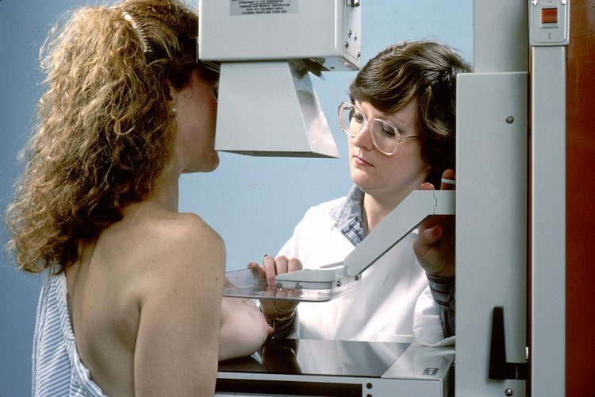

Información divulgativa. No sustituye la valoración de tu equipo médico ni sirve para decidir un tratamiento.


Qué es un cribado
Un cribado ofrece una prueba a personas sin síntomas para detectar un cáncer en fase precoz o una lesión previa, cuando el tratamiento es más eficaz. Para que valga la pena, tiene que demostrar que reduce la mortalidad y que sus beneficios superan a sus daños.
Los programas del Sistema Nacional de Salud
Para cada cribado conviene separar tres cosas que no siempre coinciden: lo que dice la norma nacional, el plazo que tienen las comunidades para aplicarla y lo que ofrece de verdad tu comunidad hoy. Las tres pueden ser distintas durante unos años.
| Cáncer | Norma nacional | Calendario de implantación | Prueba e intervalo |
|---|---|---|---|
| Colorrectal | Hombres y mujeres de 50 a 74 años (Orden SND/356/2026, en vigor desde el 21 de abril de 2026). Antes, de 50 a 69 | Ampliación progresiva: las comunidades tienen hasta cinco años para empezar a invitar a las personas de 70 a 74 y diez para acercarse a la cobertura completa de ese grupo | Test de sangre oculta en heces inmunológico cada 2 años y, si sale positivo, colonoscopia |
| Cuello uterino | Mujeres de 25 a 65 años. De 30 a 65, prueba del VPH; de 25 a 29, citología o empezar a los 30 según la vacunación (Orden SND/454/2025) | Las comunidades tienen hasta tres años desde mayo de 2025 para adaptar el programa. Mientras tanto, algunas siguen con el esquema anterior (citología de 25 a 34 y VPH de 35 a 65) | VPH cada 5 años si es negativo; citología cada 3 años |
| Mama | Mujeres de 50 a 69 años | El 23 de octubre de 2026 el Consejo Interterritorial aprobó el proyecto de orden para ampliarlo a 45-74 años. Aún no está en vigor; cuando lo esté, las comunidades tendrán tres años para empezar y seis para acercarse a la cobertura completa | Mamografía cada 2 años |
Cuello uterino, de 25 a 29 años. Si no te vacunaste contra el VPH o no lo hiciste a tiempo, se ofrece una citología cada tres años. Si recibiste la vacuna a la edad recomendada, según cómo esté implantado el programa en tu comunidad se hará también citología o el cribado empezará directamente a los 30 con la prueba del VPH.
Mama, entre 45 y 49 y entre 70 y 74. Algunas comunidades ya invitaban a estas edades antes del acuerdo nacional y otras todavía no. El proyecto aprobado no significa que todas ofrezcan ya el mismo programa.
Los programas los organizan las comunidades autónomas, que invitan por carta o mensaje. Si no recibes la invitación y estás en el grupo de edad, pregunta en tu centro de salud qué ofrece tu comunidad ahora mismo.
La Unión Europea recomendó en 2022 estudiar también cribados de pulmón (con TC de baja dosis en fumadores y exfumadores), próstata (con PSA y resonancia) y estómago (en zonas de alta incidencia). En España hay proyectos piloto.
Beneficios y daños
- Beneficios: menos muertes por estos cánceres y tratamientos menos agresivos al detectarlos antes. En el colon y el cuello uterino, además, se quitan lesiones previas y se evitan cánceres.
- Falsos positivos: resultados alterados que obligan a hacer más pruebas sin que haya cáncer, con la ansiedad que generan.
- Falsos negativos: ninguna prueba detecta todos los cánceres.
- Sobrediagnóstico: detectar tumores que nunca habrían dado problemas, y tratarlos.
Si tienes síntomas, no esperes
El cribado es para personas sin síntomas. Si notas un síntoma (un bulto en la mama, sangre en las heces, un sangrado ginecológico anormal), consulta aunque te hayas hecho la prueba hace poco o te toque dentro de un tiempo.
Las personas con riesgo alto (por antecedentes familiares o síndromes hereditarios) no siguen el cribado de la población, sino un seguimiento específico.
Ver también: Síntomas que no hay que ignorar, Cáncer colorrectal, Cáncer de cuello uterino.
Fuentes
- Orden SND/356/2026, de 13 de abril (cribado de cáncer colorrectal de 50 a 74 años). BOE núm. 96, 20 de abril de 2026. boe.es
- Orden SND/454/2025, de 9 de mayo (nuevo cribado de cáncer de cuello uterino). BOE núm. 115, 13 de mayo de 2025. boe.es
- Ministerio de Sanidad. «El Consejo Interterritorial aprueba ampliar el cribado de cáncer de mama a las mujeres de 45 a 74 años». Nota de prensa, 23 de octubre de 2026. sanidad.gob.es
- Ministerio de Sanidad. Cartera común de servicios del SNS: programas de cribado poblacional (Orden SSI/2065/2014). boe.es
- Consejo de la Unión Europea. Recomendación de 9 de diciembre de 2022 sobre el refuerzo de la prevención mediante la detección precoz. eur-lex.europa.eu
- Red de Programas de Cribado de Cáncer. cribadocancer.es